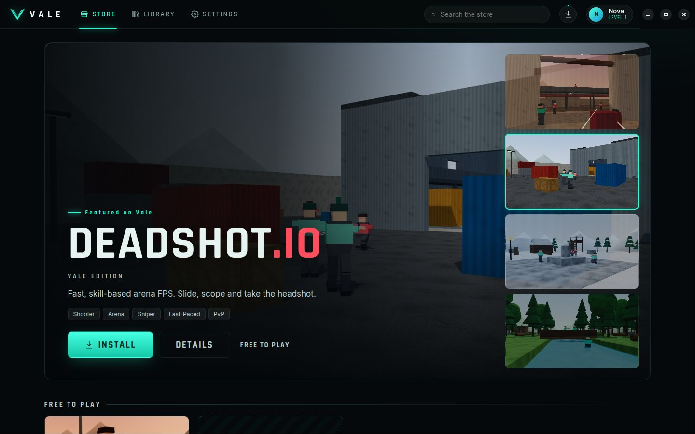

Windows
Windows 10 or 11 · 64-bit
Download installerVale-Setup.exe
Game store & launcher
Vale is a free game store and launcher for Windows, macOS and Linux. Install games, chase achievements and host LAN matches from your own PC — starting with Deadshot.io — Vale Edition.


Browse, install and launch games in one place. Installed games start instantly and play offline.
Career stats, playtime and achievements for every game, with an in-game overlay on Shift + Tab.
Flip one switch in Settings and your PC hosts Deadshot lobbies for everyone on your network.
Download
One app, every platform. Installers are built automatically from the latest release on GitHub.
Windows 10 or 11 · 64-bit
Download installerVale-Setup.exe
macOS 12 or later · Apple silicon & Intel
Download .dmgVale.dmg
64-bit · AppImage or Debian/Ubuntu package
Vale.AppImagevale.deb
The builds aren’t code-signed yet, so your OS may warn you the first time. Here’s how to open Vale anyway.
Version %VERSION% · Release notes · All releases
Featured on Vale
Vale Edition
Fast, skill-based arena FPS. Slide, scope and take the headshot — against bots on your own or with friends over LAN.
LAN play
The desktop app has the Vale server built in. One player hosts, everyone on the same network joins — no accounts, no internet required.
In Vale, open Settings → Desktop and switch on Host LAN games from this PC. Vale shows the address friends should use.
In Deadshot, go to Play → Online · LAN and enter the host’s address, e.g. ws://192.168.1.20:8787/ws. On the host PC itself, use ws://localhost:8787/ws.
Friends without the app can open http://<host-ip>:8787 in a browser and play from there. Allow Vale through the firewall if your OS asks.
Browsers block ws:// connections from secure (https) pages like this one, so the browser version on this site can’t join LAN lobbies on other PCs. Use the desktop app, or the host’s http:// address above.
First launch
Vale’s installers aren’t signed with a paid certificate yet. They’re built in the open by GitHub Actions from this repository — here’s how to get past the one-time warning.
If you see “Windows protected your PC”, click More info, then Run anyway. The installer lets you pick the install folder and adds desktop and Start menu shortcuts. Uninstall from Settings → Apps.
Open Vale.dmg and drag Vale to Applications. The first time, right-click (or Control-click) Vale and choose Open, then Open again. If macOS says the app is damaged, run xattr -cr /Applications/Vale.app in Terminal, or allow it under System Settings → Privacy & Security.
AppImage: chmod +x Vale.AppImage and run it. Debian/Ubuntu: sudo apt install ./vale.deb, then launch Vale from your app menu.